In Her Shoes
Short Film | 4K 14:28 2026
In her shoes invites you to experience a London neighbourhood from within everyday journeys. The voices you hear are based on research with women in Islington, reflecting their lived experiences of moving through urban space. These accounts have been carefully reworked into short fictional vignettes, and are performed by voice artists to protect participants’ anonymity. Together with location footage and field recordings, the work explores how safety, care, and belonging are felt moment by moment. Each vignette shares a unique memory or fleeting encounter, allowing us a glimpse of life in another’s shoes.
In her Shoes premiered as a video installation at Islington Museum (May-August 2026). Information about the wider project is available at www.ourspaceexhibition.co.uk. For the full-length version and screenings, contact Lucy.
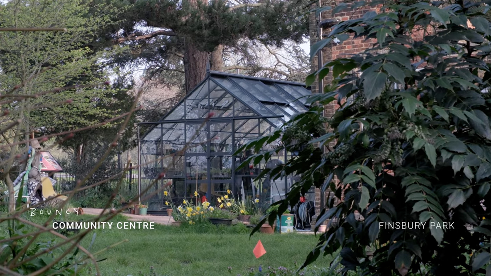
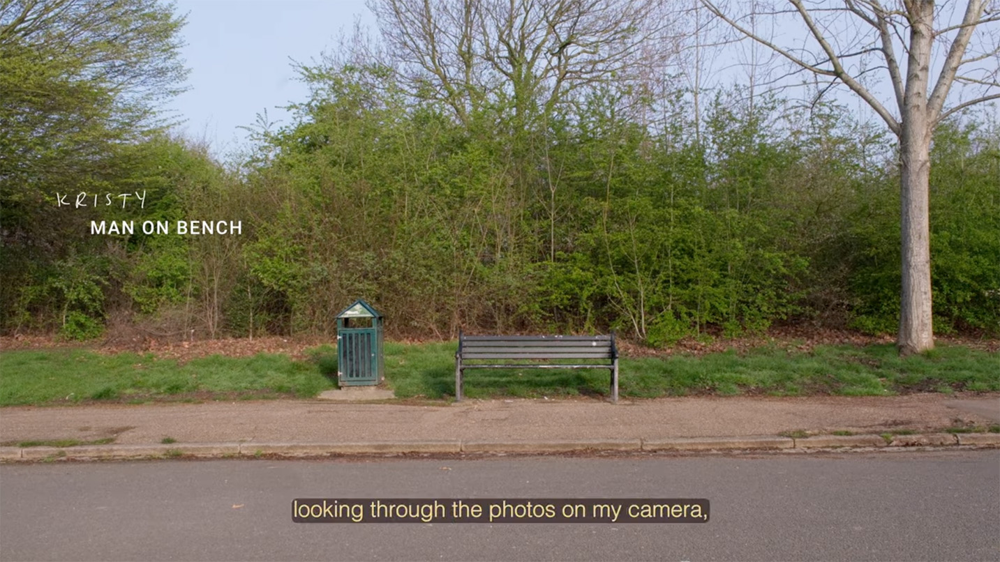
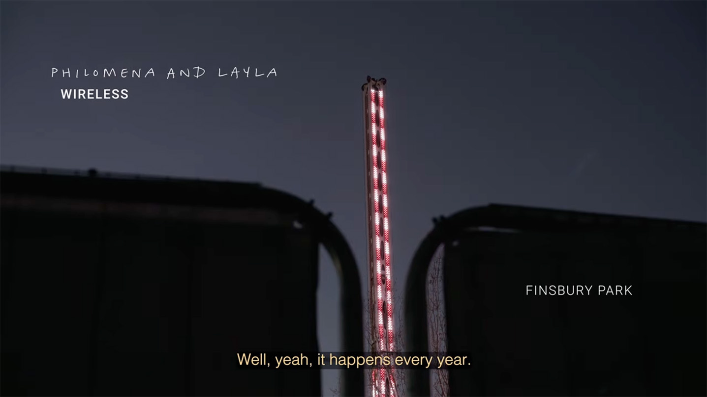
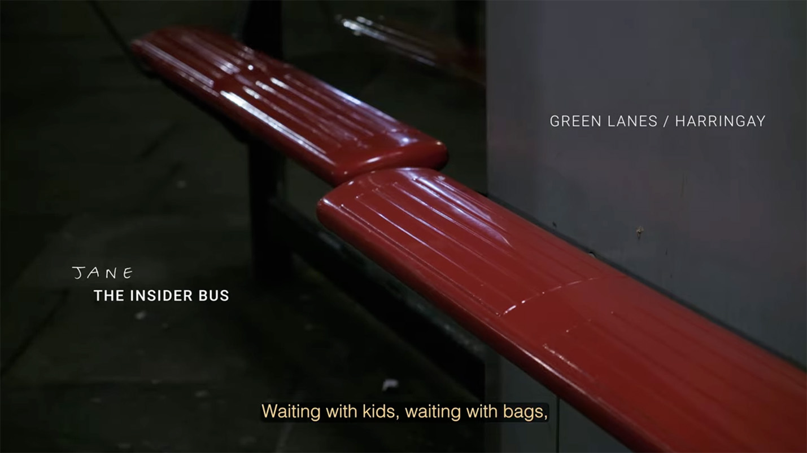
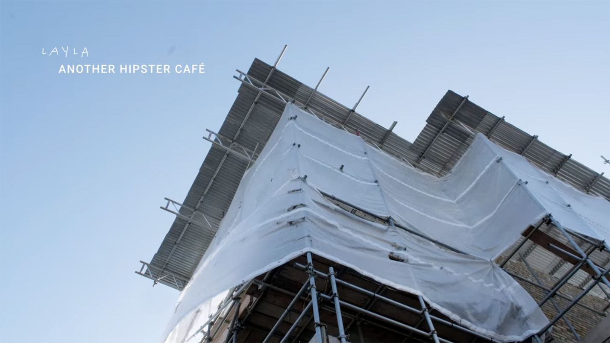
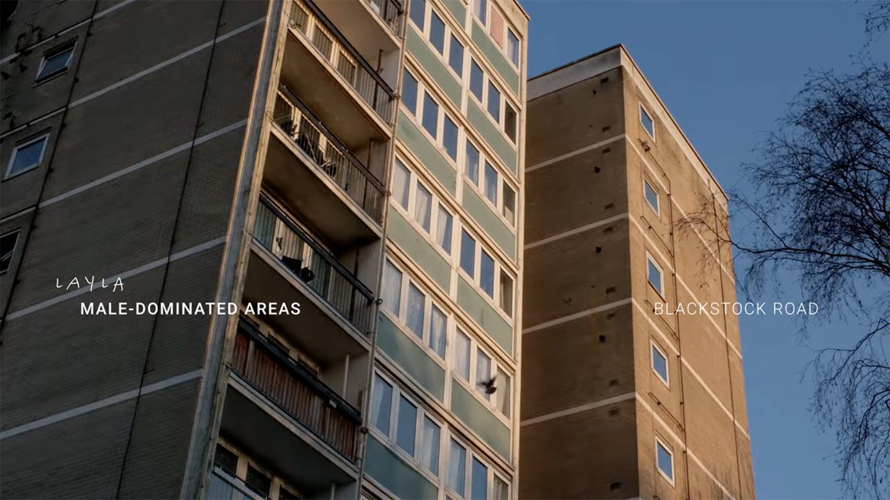
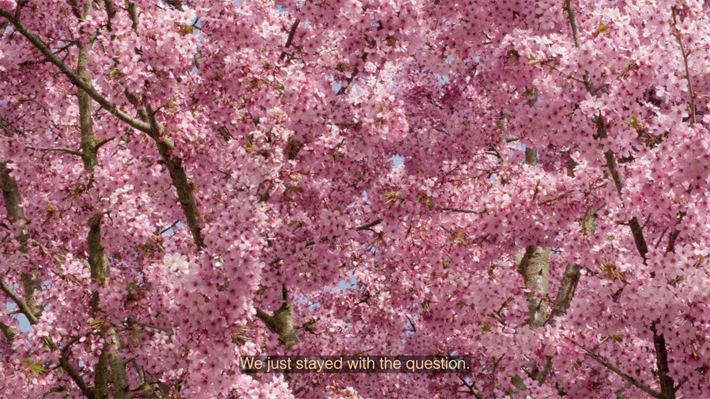
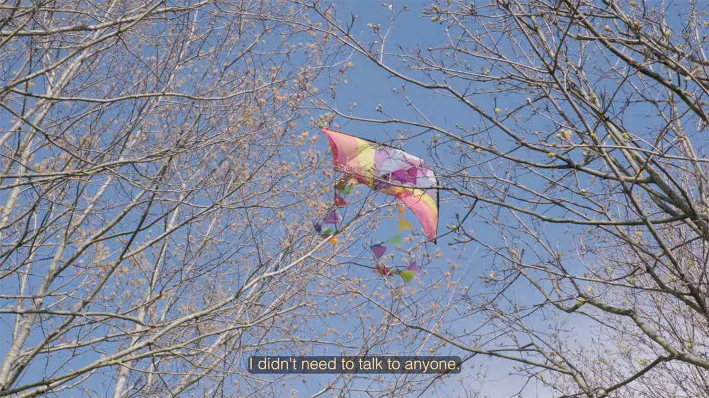
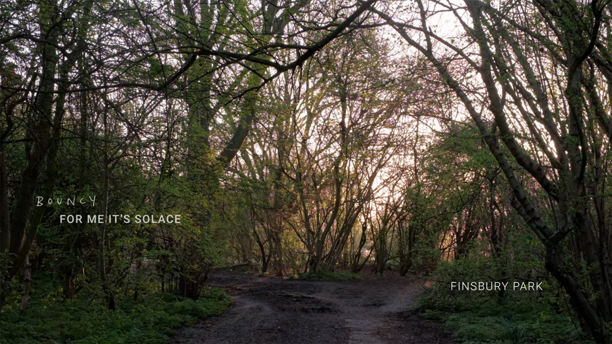
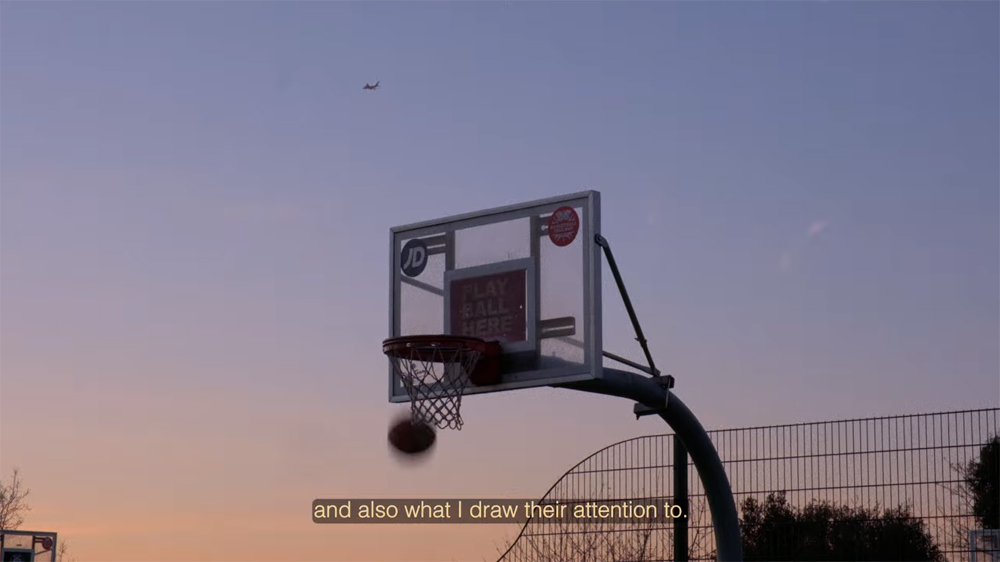
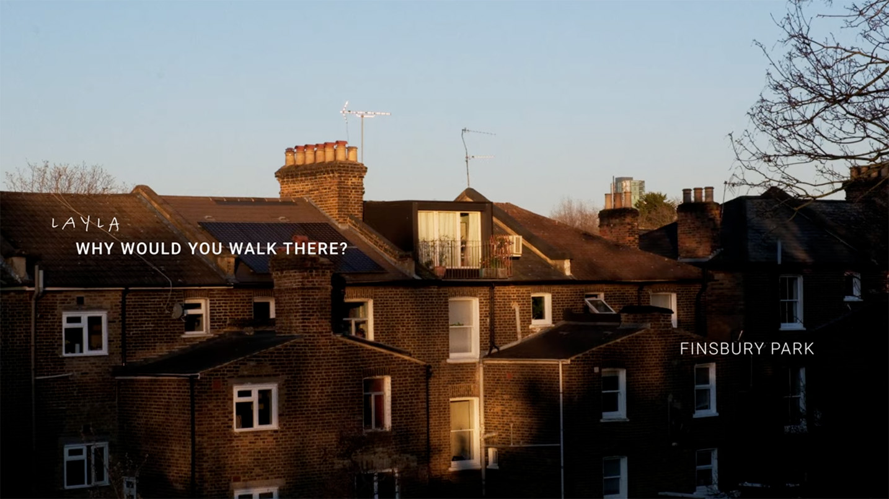
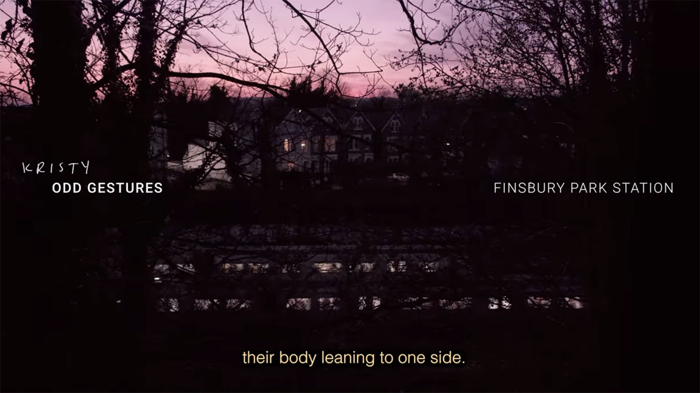
Direction/Concept: Lucy Sabin | DOP: Katerina Kerouli | Producer: Lucy Hawes | Editor: Henry Monk | Sound: Brian O’Toole | Voices: Helen Phillips, Dédé Voice | Research: Sahra Gibbon, Rosie Hastings, Alice McAlpine-Riddell (UCL)